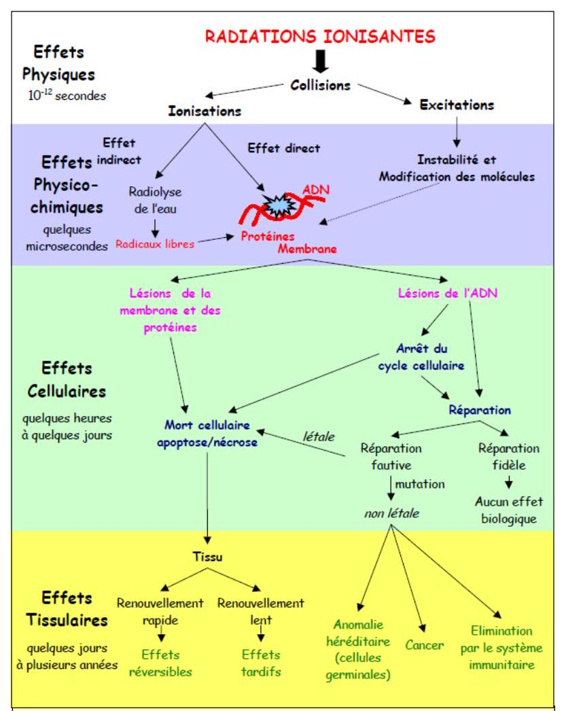
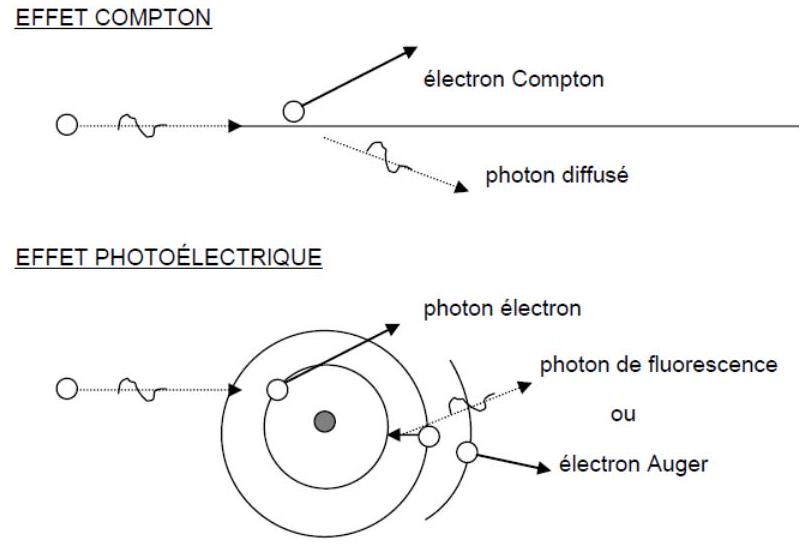
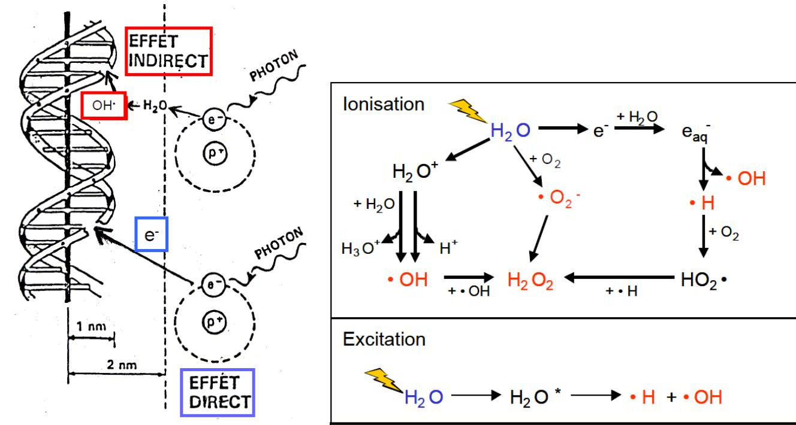
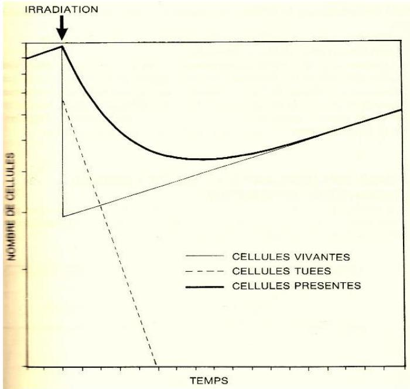
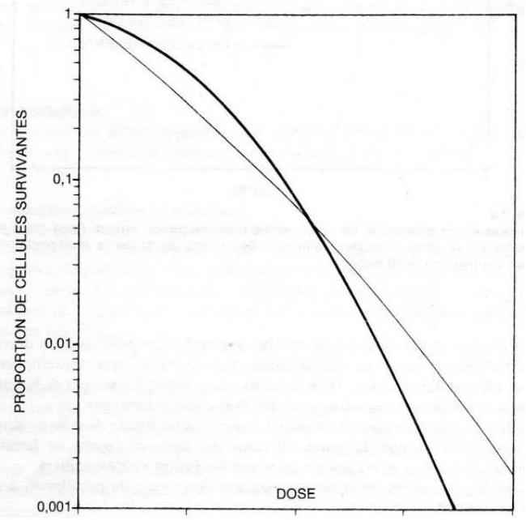
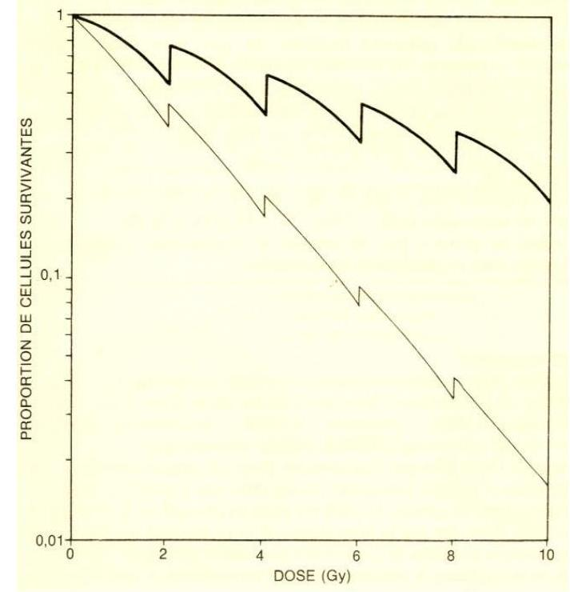
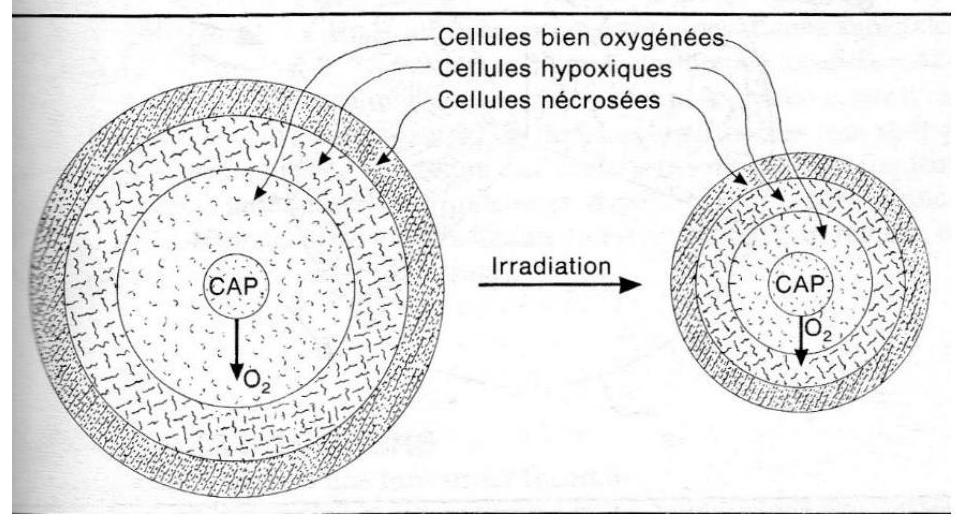

REPONSE PRECOCE AUX RAYONNEMENTS IONISANTS
Les radiations ionisantes ont de nombreuses applications en médecine et en biologie. Nous s'intéressant ici à celles utilisés en thérapeutique ; la plus courante de celle-ci est la destruction cellulaire, relativement sélective, qui est à la base de la radiothérapie. Les radiations ionisant utilisable en radiothérapie ont une énergie généralement comprise entre quelques dizaines de et quelques dizaines de et sont produites par deux mécanismes :
-
La désintégration des atomes radioactifs naturels ou artificiels : électron et surtout les photons gammas,
-
L'accélération artificielle de particules : neutrons, protons, ions lourds et surtout photons et électrons.
Mécanismes d'action des rayonnements ionisant
Les effets biologiques d'une irradiation sur les tissus cellulaires sont l'aboutissement d'une chaine de phénomènes déclenchés par le passage du rayonnement. Les événements initiaux sont des ionisations (éjection d'un électron) ou des excitations (passage d'un électron sur une couche supérieure), provoquées par l'interaction des radiations incidentes sur les atomes des molécules cellulaires. Ces modifications physiques entrainant des perturbations physico-chimiques, puis chimiques pour aboutir enfin à un effet biologique. La séquence de ces phénomènes et représentée sur (cf. figure 1).

FIGURE 1. RESUME DES DIFFERENTS PHENOMENES APRES UNE IRRADIATION
1. Étape physique
Elle correspond aux évènements physiques initiaux (ionisations, excitations) déclenchés par l'interaction des rayonnements incidents avec les atomes des molécules cellulaires. Ces évènements se produisent avec une extrême rapidité (de l'ordre de 10-15 à 10-16 secondes).
Interaction photons-matière : dans la gamme d'énergie
des photons utilisés en radiothérapie, deux effets prédominent largement
(cf. figure 2): l'effet Compton (énergie d'un photon incident transmise
à un électron arraché à une couche périphérique d'un atome et à un
photon dit diffusé) et l'effet photoélectrique (intégralité de
l'énergie du photon incident est transférée à un électron arraché à
une couche interne d'un atome, le réarrangement électronique qui
s'ensuit entraîne l'émission soit d'un photon dit de " fluorescence`,
soit d'un électron Auger).

FIGURE 2. PRINCIPALES INTERACTIONS PHOTON-MATIERE
$\Rightarrow$ Interaction électrons-matière : en radiothérapie, il
peut s'agir soit des électrons primaires, produits directement par
les appareils de traitement (accélérateurs linéaires), soit des
électrons secondaires, produits au cours des interactions
photonsmatière (voir paragraphe précédent). Deux types de phénomènes
prédominent : des interactions électron-électron, appelées collisions,
entraînant un transfert d'énergie qui s'épuise progressivement dans la
matière et des interactions électron-noyau dits phénomènes de freinage
[l'électron est freiné lors d'un passage à proximité d'un noyau (chargé
positivement qui l'attire) et l'énergie perdue lors du freinage de
l'électron est à l'origine de la production de photons
$(\mathrm{X})$ dits `de freinage].
1. Étape physico-chimique
Ce sont des collisions entre les électrons secondaires et les molécules du milieu qui sont responsables de ces effets. Une cellule peut être grossièrement assimilée à une solution aqueuse dans laquelle le rayonnement peut soit provoquer des lésions directes des molécules, soit induire des lésions indirectes des molécules par l'intermédiaire des produits de la radiolyse de l'eau cellulaire.
Action direct : les molécules excitées ou ionisées possèdent un excédent d'énergie qui peut être expulsé par rupture d'une liaison covalente et scission de la molécule en deux fragments. Chaque fragment moléculaire emporte un des deux électrons de liaison covalente et devient un radicale libre, qui est noté par un (.) : . La présence dans un radical libre, d'un électron non couplé dit célibataire lui confère une grande réactivité chimique, qui est à la base de l'effet biologique. Les radicaux libres ont tendance à s'assembler entre eux pour produire des nouvelles molécules : . Au total, lorsque toutes les molécules les sont revenues à un état stable, certaines ont été modifiées ; les lésions souvent observées sont des coupures et des pontages.
Action indirect : l'action indirecte des radiations ionisantes sur les molécules cellulaires induite par les produits de la radiolyse de l'eau cellulaire. L'ionisation d'une molécule d'eau produit après une cascade de réactions chimiques à la formation des radicaux libres hautement réactifs, qui sont à l'origine des effets biologiques :
-
Oxydant : OH
-
Réducteur : H' (hydrogène atomique) et (électron aqueux). Ces radicaux libres sont capturés par les molécules du soluté qu'ils modifient par les réactions chimiques qu'ils induisent.
Lésions des acides désoxy-ribonucléiques (ADN)
L'ADN joue un rôle essentiel dans la division cellulaire et de la
synthèse des protéines. Les deux chaines complémentaires de l'ADN sont
constituées par une alternance d'un sucre, le désoxyribose, et d'acide
phosphorique, et sont reliées entre reliées entre elle par des paires de
bases (soit adénine et guanine, soit cytosine et thymine) ; c'est
l'agencement de ces bases qui constitue le code génétique. La molécule
d'ADN peut être lésée directement par les électrons ou plus souvent par
les radicaux libres produits par la radiolyse de l'eau (figure, , il
s'agit de lésions de bases ou des sucres, de pontage, ou surtout de
ruptures de chaines, simple ou double. La cellule possède des enzymes,
telle que l'ADN polymérase, qui permettent sous certains conditions la
réparation des chaines lésées (cf. figure 3).

FIGURE 2. L'ADN PEUT ETRE LESE, SOIT DIRECTEMENT, SOIT INDIRECTEMENT PAR L'INTERMEDIAIRE DES PRODUIT DE LA RADIOLYSE DE L'EAU CELLULAIRE
Action sur la cellule
Les lésions cellulaires sont essentiellement celles de l'ADN du noyau cellulaire. Ces lésions sont :
Létales (mortelles) si elles sont irréparables et touchent des fonctions vitales pour la cellule. La mort cellulaire n'est généralement immédiate que pour des irradiations de plusieurs centaines de Gy. Pour des doses de quelques Gy habituelles en radiothérapie, la cellule cesse de se diviser après une ou plusieurs mitoses : c'est la mort différée (reporté dans le temps), qui correspond à la perte de prolifération (ceci explique le délai constamment observé entre l'irradiation et la régression clinique du volume tumoral).
Sub-létales, qui ne sont pas individuellement létales et sont réparables. L'accumulation de ces lésions sub-létales dans la cellule peut tout de même conduire à sa mort. Potentiellement létales, qui peuvent être létales si la division survient rapidement, mais qui peuvent aussi se réparer si les conditions sont favorables.
La réparation cellulaire peut être incomplète ; lésions du matériel génétique non ou mal réparées, appelées mutations, sont d'autant plus préoccupants qu'elles touchent les cellules germinales responsable de la fécondation.
2. Étape tissulaire
Les conséquences d'une irradiation sur un tissu sont différentes selon que la population cellulaire qui le compose est en croissance ou en équilibre.
a. Population tissulaire en croissance
L'exemple-type en est constitué par les tumeurs. Le temps de doublement est celui nécessaire à la multiplication par deux de l'effectif cellulaire. Il varie de plusieurs jours à plusieurs années et dépend notamment du pourcentage de cellule en cours de division. L'évolution d'une population après une irradiation unique est la résultante de la disparition des cellules tuées et la multiplication des cellules survivantes (cf. figure 4).

FIGURE 4. L'EVOLUTION D'UNE POPULATION APRES UNE IRRADIATION UNIQUE (TRAIT GRAS) EST LA RESULTANTE DE LA DISPARITION DES CELLULES TUEES (POINTILLE) ET LA MULTIPLICATION DES CELLULES SURVIVANTES (TRAIT MAIGRE).
b. Population cellulaire en équilibre
La majorité des tissus sains appartient à cette catégorie. Le nombre des cellules qui naissent est égal à celui de celles qui meurent. Le temps de renouvellement, qui est celui au bout duquel toutes les cellules ont été renouvelées, est compris entre quelques jours (muqueuse intestinal) et quelques mois ou années (foie, rein). Ces tissus saints sont le plus souvent composés de deux compartiments cellulaires :
Celui des cellules souches, indifférenciées, qui se multiplient en donnant naissance à la fois à de nouvelles cellules souches et aux cellules qui vont se différencier.
Celui des cellules différenciées qui ont perdu la capacité de se diviser.
Dans certains tissus, telle que la moelle osseuse hématopoïétique, on décrit un troisième compartiment, dit intermédiaire, fait de cellules qui se multiplient en achevant leur différenciation. Dans certains tissus, enfin, il n'y a pas de hiérarchie cellulaire aussi stricte : ces tissus sont dits non compartimentaux. L'épiderme, par exemple, est constitué d'une couche basale de cellule souches dont une partie assure le renouvellement du tissu et l'autre se kératine (différenciation), tout en migrant vers la surface (avant de desquamer). On assiste successivement après l'irradiation de ce type de populations à deux compartiments à :
Un dépeuplement en cellules souches (par exemple les cellules de la couche basale de l'épiderme), seules touchées par les radiations ionisantes.
L'élimination progressive par sénescence des cellules différenciées (par exemple la desquamation des cellules kératinisées de l'épiderme), qui n'est qu'incomplètement compensée par la différentiation des cellules souches dont le nombre réduit.
L'accélération de la multiplication des cellules souches résiduelles.
Le repeuplement des cellules différenciées.
Ceci explique que les effets cliniques sont perçus d'autant plus vite que l'élimination des cellules différenciées est plus rapide, c'est-à-dire que la durée de renouvellement du tissu est brève. Le temps de renouvellement de l'épiderme étant de 3 semaines et celui de la muqueuse de l'intestin grêle est de 3 jours, les effets aigus de l'irradiation seront perçus au bout de 2 à 3 jours au niveau de l'intestin et au cours de la troisième semaine pour la peau, quelle que soit la dose.
Facteurs influençant l'effet biologique des radiations
L'action biologique des rayonnements peut être modifiée par plusieurs paramètres dont les propriétés sont mises à profit pour faire apparaitre un effet différentiel entre les tissus sains et malins.
Radiosensilbilité intrinsèque
La proportion de cellules survivantes ou taux de survie cellulaire diminue lorsque la dose augmente. La courbe de survie est la représentation graphique de ces relations dose-effet. Elle représente en cordonnées semi-logarithmiques, une tangent à l'origine dont la pente négative est et une incurvation progressive appelée épaulement (cf. figure 5). L'aspect de la courbe ne peut être expliqué par les seules lésions létales. L'interprétation passe par le fait que la cellule peut être tuée soit par une lésion directement létale, soit par l'accumulation des lésions sublétales. L'incurvation s'explique par la diminution des réparations par saturation des mécanismes enzymatiques lorsque la dose augmente. La diminution de la cambrure de la courbe dans sa partie distale signifie que, lorsque ces mécanismes de restauration sont saturés, presque toutes les nouvelles lésions sont létales. En outre la capacité de restauration cellulaire est donc le facteur prédictif principal de la réponse des populations tissulaires aux radiations ionisantes (radiosensibilité intrinsèque).

FIGURE 5.COURBE DE SURVIE DES POPULATIONS CELLULAIRES SOUMISES A UNE IRRADIATION :
-
TRAIT MAIGRE : MAJORITE DES TUMEURS ET TISSUS SAINS A REPONSES PRECOCES
-
TRAIT GRAS : TISSUS A REPONSE TARDIVE ET TUMEURS PEU SENSIBLES A L'IRRADIATION.
Schématiquement on distingue :
Des tissus à faible capacité de réparation, donc relativement radiosensibles dans la courbe de survie est caractérisée avec un épaulement étroit (cf. figure 5): la plupart des tumeurs (carcinomes par exemple : un cancer développé à partir d'un tissu épithélial (peau, muqueuse)) et tissus sains à précoce réponses.
Des tissus à forte capacité de réparation, donc relativement radio-résistants, dont la courbe de survie est caractérisé par un épaulement large (cf. figure 5): tissus sains à réponse tardive et des tumeurs peu sensibles à l'irradiation (glioblastome, mélanome malin, etc.).
Facteur temps
Toute irradiation se définit par trois paramètres :
La dose totale exprimée en Gy.
L'étalement, c'est-à-dire le nombre de jours écoulés entre la première et la dernière fraction.
Le fractionnement qui est le nombre de fractions
La dose par fraction qui est égale à la dose totale divisée par le nombre de fractions est essentielle, car c'est d'elle dont dépond, en grande partie, l'effet différentiel que l'on peut obtenir entre tissus sains et malins.
L'étalement et le fractionnement favorisent trois phénomènes biologiques :
La restauration cellulaire, à cause de la réparation des lésions sub-létales et potentiellement létales entre les fractions.
La repopulation, c'est-à-dire la multiplication des cellules survivantes.
La réoxygénation des cellules tumorales hypoxique
L'étalement et le fractionnement protègent donc relativement plus les tissus qui ont une capacité de restauration et de la repopulation élevée. Par exemple, la multiplication des cellules de la peau et des muqueuses semble nettement plus active après l'irradiation que la plupart des cellules carcinomateuses. La restauration et la repopulation des cellules tumorales entre les fractions obligent en contre partie à augmenter la dose totale pour maintenir l'effet turnicidé (cf. figure 7). L'expérience clinique a empiriquement conduit à adopter dans la plupart des cas le fractionnement dit classique, c'est-à-dire 5 semaines de 2 Gy par semaine.

FIGURE 6.SURVIE DE POPULATIONS CELLULAIRES SOUMISES A UNE IRRADIATION FRACTIONNEE (2 GY PAR JOUR) :
-
tRAIT GRAS : CAS D'UNE POPULATION A FORTE CAPACITE DE RESTAURATION ET DE REPOPULATION ;
-
TRAIT MAIGRE : CAS D'UNE POPULATION FAIBLE CAPACITE DE RESTAURATION ET DE REPOPULATION.
Effet oxygène
L'oxygène présent dans les cellules au moment de l'irradiation augmente l'effet de celle-ci en se combinant avec les radicaux libres pour former des molécules hyperoxygénées. La toxicité de ces substances s'ajoute à celle du rayonnement. Par exemple pour les photons ou les électrons la dose nécessaire pour stériliser les cellules en hypoxie est en pratique de 3 fois plus élevée que pour des cellules en normoxie. Les cellules saines sont bien oxygéné (vascularisation régulière). Il ne l'en est pas de même pour le cas d'une tumeur en raison de l'anarchie vasculaire (l'approvisionnement en oxygène est irrégulier). L'oxygénation d'une cellule donnés y est inversement proportionnelle à la distance qui s'épare de son capillaire nourrisseur, on trouve donc de celui-ci d'abord des cellules bien oxygénés, puis des cellules hypoxique, enfin des cellules nécrotiques (lysées). Le pourcentage des cellules hypoxiques varie dans les tumeurs entre $1 %) et (50 %$ selon le type histologique, cette proportion s'accroît avec le volume de la tumoral, mais toute tumeur cliniquement détectable contient en fait des cellules hypoxiques. L'hypoxie constitue ainsi un facteur important de radiorésistance, d'autant que l'irradiation est délivrée en une seule fois. L'étalement de la dose favorise la réoxygénation des cellules hypoxique ; le mécanisme le plus souvent invoque l'immigration des cellules hypoxiques vers les zones bien oxygénées, qui est favorisée par l'élimination des cellules qui s'y trouvaient (cf. figure 8.

FIGURE 7.CELLULE SONT D'AUTANT MIEUX OXYGENEES QU'ELLES SONT PROCHES DES CAPILLAIRES. L'ETALEMENT DANS LE TEMPS FAVORISE LA REOXYGENATION DES CELLULE HYPOXIQUES QUI SE RAPPROCHENT DES CAPILLAIRES EN RAISON DE L'ELIMINATION DES CELLULES BIEN OXYGENEES, LA PLUS RADIOSENSIBLES.
La qualité du rayonnement
L'effet biologique produit par une irradiation, à dose égale, dépond de la nature du rayonnement. L'efficacité biologique est le rapport des doses nécessaires pour obtenir un effet biologique donné (par exemple la mort de 50% des cellules), avec un rayonnement de référence (photon de haute énergie). L'EBR est principalement liée au (TEL), qui exprime le nombre d'ionisations par unité de longueur du parcours de la particule. On distingue des rayonnements à TEL faible (photons et électrons) et à TEL élevé (neutron et les ions lourds).
Cycle cellulaire
Le cycle cellulaire se décompose en 4 phases : la phase G1, qui suit la mitose et dont la durée est la plus variable, la phase de synthèse pendant laquelle l'ADN est répliqué, puis la phase G2 et enfin la phase ; les cellules qui temporairement ne se divise pas sont dites hors cycle ou G0. La radiosensibilité est maximale durant les phases G2 et et minimale en S. l'irradiation provoque un ralentissement de la synthèse de l'ADN, donc un allongement de la phase , est un blocage temporaire des cellules dans la phase , qui aboutit à un retard à la mitose synchronisation cellulaire (une population cellulaire homogène en transition G1/S).
Débit de dose
En cas d'irradiation continue, la radiosensibilité cellulaire varie en fonction du débit de dose. Dans la plupart des lignées cellulaires, pour de hauts débits (12 Gy ou plus par heure), la radiosensibilité est indépendante du débit. Pour des valeurs inférieures, trois phénomènes biologiques expliquent l'influence du débit :
La restauration cellulaire, dont les effets sont notables pour des débits .
La progression dans le cycle cellulaire peu fréquente au-dessus de
La division cellulaire, dont l'incidence n'est notable que pour des débits aussi bas que Dans le domaine de la curiethérapie à bas débit de dose (en dessous de ), la restauration cellulaire et donc le phénomène prédominant ; lorsque le débit de dose est diminué sans modification de la dose, on observe peu d'effets sur les populations tumorales, mais une réduction parfois significative des effets tardifs sur les tissus sains.
Température
La température à elle seule peut être létale pour la cellule à partir de . L'effet produit par une irradiation est de même augmenté si les tissues irradiés sont exposés à une hyperthermie. La chaleur inhibe la réparation des lésions sublétales. Pour obtenir en hyperthermie un effet donné, sur la population tumorale, la dose d'irradiation doit être réduite, amis que ceci et aussi vrai pour les tissus sains.
Les effets des rayonnements sur les cellules sains et tumorales
Effet sur les tumeurs
La vitesse de croissance d'une tumeur est fonction :
De la durée du cycle cellulaire, en moyenne de 2 à 4 jours, donc peu différente de celle observée dans les tissus sains, mais qui est en fait très variable d'une cellule à l'autre de même tumeur.
Du coefficient de prolifération, c'est-à-dire du pourcentage de cellules tumorales en division, qui varie entre $0,3 %) et (100 %$.
Du coefficient de pertes cellulaires, qui peut atteindre et est du à différenciation cellulaire, à la mort des cellules tumorales pendant la mitose.
Les seules cellules tumorales vraiment préoccupante sont celle qui sont capable de se multipliées indéfiniment.
Effet sur les cellules saines
Il est classique d'opposer :
Les réactions précoces, qui apparaissent dans les jours et semaines suivant l'irradiation, qui sont secondaires à la mort d'un grand nombre de cellules dans les tissus à renouvellement rapide, sont réversibles et s'estompent généralement en quelques semaines avec la repopulation cellulaire à partir des cellules souches résiduelles.
Les réactions tardives, ils apparaissent dans un délai de quelque mois à plusieurs années et qui sont le fait des tissus à renouvellement lent ; leur mécanisme est incomplètement élucidé et fait intervenir un déficit en cellules, secondaire à une reconstitution incomplète des cellules souches, et une perturbation de la vascularisation liée à des lésions de l'endothélium des artérioles ; l'approvisionnement cellulaire et la diminution du flux sanguin aboutissent ainsi à des dystrophies appelées fibroses, atrophies ou rétractions tissulaires.
Les réactions précoces se sont les effets tardifs qui constituent le facteur limitant de la radiothérapie. Les paramètres qui définissent plus les effets des radiations ionisant sont le volume des tissus saints irradiés, la dose totale, l'étalement et le fractionnement. La dose par fraction influence beaucoup plus les réactions tardives que les réactions précoces. Les effets de la radiothérapie enfin, peuvent être franchement accentués par ceux de thérapeutiques combinées, en particulier chimiothérapie te chirurgie.
LA RADIOTHERAPIE EXTERNE
Dans une certaine mesure, on pourrait dire que la radiothérapie est née
avec la découverte quasi concomitante des rayons et de la
radioactivité. Il a néanmoins fallu expérimenter l'effet des
rayonnements sur les tissus (rayonnements émis par les tubes ou curiethérapie par radium, par exemple) pour que la radiothérapie
prenne son essor, par une association entre médecins pionniers et
physiciens, le couple le plus célèbre étant celui formé autour des
années 20 par Marie Curie et Claudius Regaud.
L'essor de la radiothérapie est lié à une double évolution dans les domaines :
Dans le domaine médical, la compréhension approfondie de l'effet des rayonnements sur les tissus, le fractionnement, l'étalement ainsi que bien sur l'accumulation d'expérience clinique dans les traitements (doses curatives pour certaines tumeurs, doses limites pour les organes critiques)